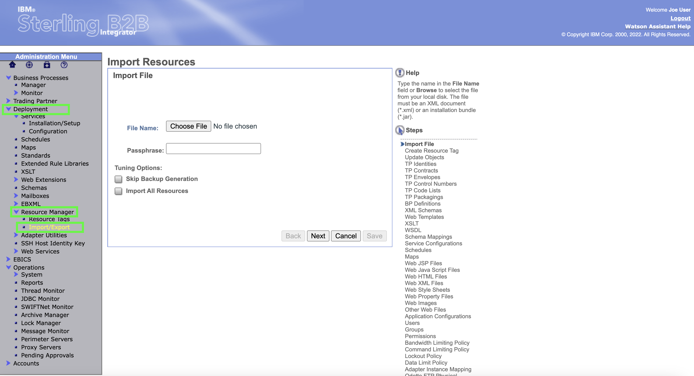
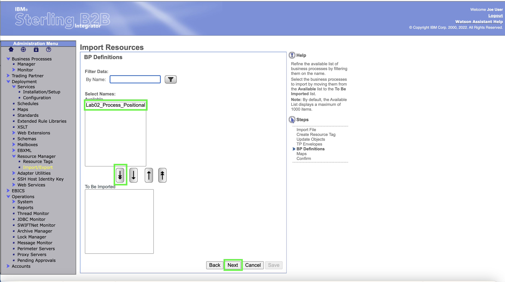

B2Bi Demo 02 Outbound Invoice
Demo 2 simulates an application file with multiple invoices in a proprietary format and splits it into two or three EDI ANSI X12 810 documents. There is a short import scenario that does not have to be part of the demonstration. The business process, maps, and envelopes are imported into B2B integrator.
Open the B2Bi dashboard and import the lab02 definition
- In the B2B Integrator web console, click Import/Export under the Resource Manager under Deployment in the left-hand panel.

- Click Choose File in the Import Resources page.

BP quiz question
Several BP quiz questions will come from this area B2Bi Import. When taking the BP quiz make sure tyou have noted the number of maps imported.
- Select the Lab02_All_Import.xml This may look different depending upon what platform you are importing the xml from.
- Enter password into the Passphrase dialog box and click Next
- No changes to Resource Tags so click Next

Leave the default to allow updates if objects exist in the system. Click Next

Hint
Note sure what to hint about here....if anything.....
- Use the double down arrow to select all of the TP (Trading Partner) Envelopes

In the latest IBM Sterling B2B Integrator release, new password policies have been set that require users to change their password the first time they authenticate.
- The trading partner envelopes are shown as all selected. Click Next

- Use the double down arrow to select all of the BP (Business Process) Definitions. Then click Next

- Use the double down arrow to select all of the Maps.

- The maps are shown as all selected to be imported. Click Next
- All of the artifacts selected for import are shown. If any are missing, hit the Back button and make the additional selections. Otherwise, click Finish
- Click Return

Important
That is the end of the setup necessary for the lab. In a customer demo situation, that should usually get setup ahead of time so that only the following steps are needed to show the demo scenario itself.
Execute the lab02 demo
- Click Business Processes and then Manager. In the Search box enter lab02 to search for the process name.

BP quiz question
Not sure what question best here ir even if the popp up is functioning.
- Click on the Execution Manager

- Click Execute to run the business process.

- In the Local Desktop filename Select Choose File

- On the desktop itself choose the input file outb810.txt from the file system.
Note
Generally, documents sent by the B2B Integrator host company to trading partners are considered "outbound" and ANSI X12 invoices are "810"s, hence the outb810 name. This contents and formatting of this file is critical for the proper functioning of the business process. The file format is typical of many flat file formatted application files. The file is processed by two different maps in the Business Process. The first finds the partner name off an internal supplier number in the application file. The second translates the contents of the file into into an ANSI X12 EDI format. is the end of the setup necessary for the lab. In a customer demo situation, that should usually get setup ahead of time so that only the following steps are needed to show the demo scenario itself.

- Once the file is shown as selected next to Choose File click GO!

- Wait until the Business Process completes and all of the Status are shown as Success Click Close in the upper right of the screen.
View the Business Process Results
Now that the Business Process has run, the user can view detail of the process.
- Click Current Processes under Monitor which is under Business Process

- Click the ID next to the Lab02_Process_Positional step

- Inside the Lab02_Process_Positional click on info in the first line under the Document column
- The Input application file is shown. This is the format coming out of an Accounts Receivable module most likely in an ERP system. Close out of this screen.

- Click on the top process in the Id Column.

- View the final output document by clicking on info in the last row under the Document column.

- The output ANSI X12 document is shown.

BP quiz question
There is a quiz question somewhere around here....
This concludes lab02.